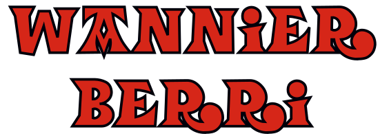

Capabilities (incomplete list)
Speed
Examples
Tutorials
Documentation
Methods
Installation and technical remarks
Benchmarking with
postw90.x
People
Contributing to the code
External software used
Index
Wannier Berri
Documentation
Documentation
Link to detailed
Documentation